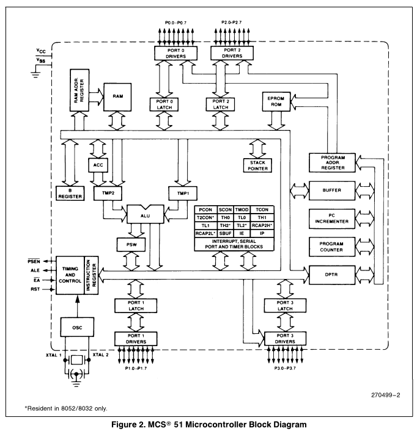
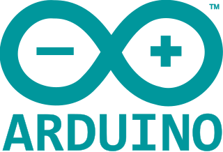

数的表示 如果我们想要表示8个数，比如从0-7。可以用一只灯泡使用八种亮度来实现（先不考虑用不同颜色来表示），也可以使用三个灯泡开/关状态来实现。前者可以看作是模拟量，根据亮度识数不容易辨识，后者看作数字量或开关量，需要编号/编码如关关开是1，开关关是4。如果一个灯泡相当于一个位，那么前者用一个位表示了八个数，考虑作八进制，后者用一个位表示两个数，考虑作二进制，用三个位表示八个数。 绝大多数电子计算机都是使用二进制表示，即一个位0或1表示，对应于低电平或高电平。如果是八进制表示，则一个位可能需要对应八种电平。使用二进制是由于它更容易在物理上实现。了解三极管知道，它一般有三个工作区截至区、放大区、饱和区。对于双极性二极管而言，让它处在截至区或饱和区比较容易，在基极提供足够小或足够大的电流就可以了，判断高/低电平也只需要一两个阈值。而工作在放大区，集电极电流放大多少则需要精确控制基极电流大小，传输时一旦受到干扰就可能影响结果，并且输出需要测量。也就是数字电路相对于模拟电路的优势所在。
处理器几个重要的指标 位宽：对应于数据总线位宽，常见有8位、16位、32位、64位。8位可以代表2^8=256个数，16位：2^16=65536=64K、32位:2^32=4294967296=4G。 指令集：不同类型的处理器拥有不同的指令集。大致分两类，复杂指令集运算即CISC（Complex Instruction Set Computing）和精简指令集运算即RISC（Reduced Instruction Set Computing）。“复杂指令集计算机包含许多应用程序中很少使用的特定指令，由此产生的缺陷是指令长度不固定。精简指令集计算机通过只执行在程序中经常使用的指令来简化处理器的结构，而特殊操作则以子程序的方式实现，它们的特殊使用通过处理器额外的执行时间来弥补。”（摘录于维基百科——中央处理器）。近几年关于RISC的消息有RISC-V，作为使用CISC的intel最近有这样的新闻：英特尔回应Linus Torvalds对AVX512的批评。 寻址范围：由地址总线位宽决定，通常8位单片机使用16位地址总线，寻址能力为2^16=64K。8086使用20位地址总线，寻址能力2^20=1M。 体系结构：根据数据与指令共用存储器、总线或是使用单独的存储器、总线区分，前者是冯诺伊曼体系结构，后者是哈佛体系结构。
单片机 还是以个人计算机为例，电脑主板上主要有CPU、内存（条）、磁盘/硬盘、芯片组（北桥、南桥）、I/O芯片、网卡等等。单片机可以看作是简化的微型电脑，它把CPU、SRAM、FLASH ROM、总线、GPIO、各种外设如UART等集成到一个芯片里，所以它更像是个系统。它们也都需要时钟，相当于系统的脉搏。所以单片机的（电路）板级最小系统一般除了电源，只需要少量其他外围元件。 以下是MCS 51单片机框图： 
8051系列 8位 | 冯诺伊曼体系结构 | 复杂指令集 这是很多人学习的第一款单片机，我也不例外。我们那会儿是通过郭天祥老师的视频学习的，网上这方面的资料很丰富。 8051最初由intel设计生产MCS 51单片机，后来多由Atmel公司生产，如AT89C51。国内STC的8051系列单片机也多被使用。 8051是一款经典的单片机，教科书大都以它作为单片机教学内容。而微机原理多以intel的8086来教学。x86指令集架构最初开发于8086。
AVR单片机  8位 | 哈佛体系结构 | 精简指令集 AVR单片机就用在我工作的第一家单位的产品上。当时维护着汇编语言代码。AVR studio 是Atmel公司推出的开发环境，只能用汇编语言开发。avr-gcc是开发工具链，原生于Linux操作系统，移植于Windows操作系统上为winavr。2016年，Atmel公司被microchip公司收购。新的开发平台有Atmel Studio软件开发工具，Arduino提供了硬件、软件平台，这两个自己没有使用过，Arduino或许是更好的平台。
MSP430
16位 | 冯诺伊曼体系结构 | 精简指令集这款单片机以低功耗为主要特色，所以多用在电池供电、便携式设备。实验室学习了一小段时间，因为相对小众转而学习了AVR。TI，即德州仪器，历史上第一块集成电路就跟TI有关。1958年9月12日，第一款集成电路诞生。在校学生可以申请免费样片，在个人经历中TI是这方面最为慷慨的，申请到了好几块样片。
ARM Cortex-M 系列 32位| 哈佛体系结构 | 精简指令集 由ARM公司设计处理器，其它公司获取许可后进一步定制，加入存储器和各种外设等组件做成MCU。所以它有多家半导体商设计生产，拥有多种品牌多种型号。由意法半导体（ST）设计生产STM32系列单片机，有两个示例： STM32F1系列 | Cortex-M3 | ARMv7-M架构 STM32F103是这个系列里常用的一款。ST提供了标准外设库STM32F10x_StdPeriph_Lib，调用库可以简化开发，减少开发时间。曾经用它做过CAN协议的转接器，开发工具用的是Keil。现在ST提供了STM32Cube开发工具。 STM32F4系列| Cortex-M4 | ARMv7E-M架构（E:具有DSP） 作为物联网应用，上海庆科推出了EMW3165模块，它集成了Cortex-M4核和Wi-Fi模块。做过一份短期工作，用EMW3165在其Mico操作系统上进行二次开发，做智能印章原型。
单片系统更为复杂，以手机为例。先继续了解ARM： 初为所知的基于ARM的嵌入式系统开发，处理器有ARM7、ARM9、ARM11，它们属于Armv6及之前架构。从Armv7架构开始，ARM分出了三种： A-profile | Crotex-A系列 | 面向应用(Application) R-profile | Crotex-R系列 | 面向实时(Real-time) M-profile | Crotex-M系列 | 面向嵌入式(Embedded) 注：Crotex_M0是Armv6-M架构
当下主流智能手机Android、iPhone大多都用ARM设计的处理器，即Crotex-A系列处理器。 Android: 作为早期智能手机，Motorola CLIQ使用了QUALCOMM的单片系统MSM7200，它集成了两个ARM处理器:ARM11和ARM9。 iPhone: iPhone6使用Apple设计的Apple A8单片系统，它也基于ARM，兼容ARMv8-A架构。
作为单片系统，处理器是其中一个重要的部分。还有很多其他单元，以下是MSM7200系统框图：
一般我们在主机上（HOST）开发，产生用于目标板/单片机（TARGET）的程序。将程序写入到目标存储器的过程就是烧写/烧录程序。之所以“烧”，可能因为以前的存储器(EPROM)用紫外射线擦除，高电压写入，现在存储器一般为FLASH ROM，不需要那样了，所以有时候也说下载程序。 写好的程序编译成二进制形式的可执行文件，可以转为Hex文件。 8051与AVR单片机常使用Hex文件烧录程序，USBASP是使用ATmega8/ATmega88制成的USB下载器。是一种低成本的方案，可以用它给8051系列单片机、AVR单片机烧录程序。
开发调试时，有时为了知道程序执行状态，会开启断点看某一时刻寄存器的状态或者跟踪执行等，有用硬件的在线调试，也有用软件仿真运行调试，即仿真调试。 对于MSP430及ARM系列使用Jtag烧写程序、在线调试。 Jtag 使用计算机并口与目标板连接，速度较慢。 JLink/STLink 使用USB口，速度快。由于版权问题，国内Jlink仿冒严重、质量较差，而国外同款产品价格非常昂贵。 在国内，使用盗版软件、硬件一直是个问题。
下载程序还有一种情况，使用bootloader，了解到Arduino也使用这个方法（配合串口使用）。 Android手机上这个过程对应于刷机（可以配合SD卡使用）。
在这次新冠肺炎疫情中，拥有先进科技的欧美遭受到比我国更大的打击。我国在疫情初期实行了有效隔离措施减少了传播，回家过年的传统也为人们在那段时间安心待着、减少外出提供了重要条件。